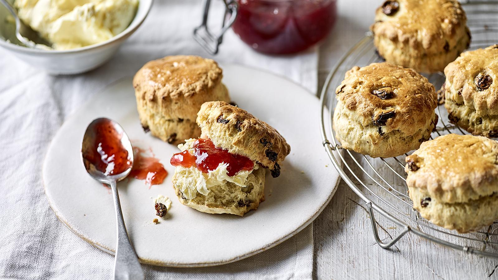

Scones
Home

Description
easy fruit scones are perfect for relaxed weekend baking. Serve with strawberry jam and cream
Ingredients
- 450g self raising flour
- 2 tsp baking powder
- 75g butter
- 75g sugar
- 150g sultanas or any dried fruit of your choice
- 250ml milk
Steps
- Warm the oven to 180 degrees celcius
- Sift the flour and baking powder into a bowl
- Rub in the butter with the tips of your fingers until it resembles breadcrumbs
- Stiry in the sugar and fruit
- Add the milk and form a dough
- Roll out to approx 2cm thickness
- Cut out round shapes using a cutter
- Place in the oven for 10 minutes